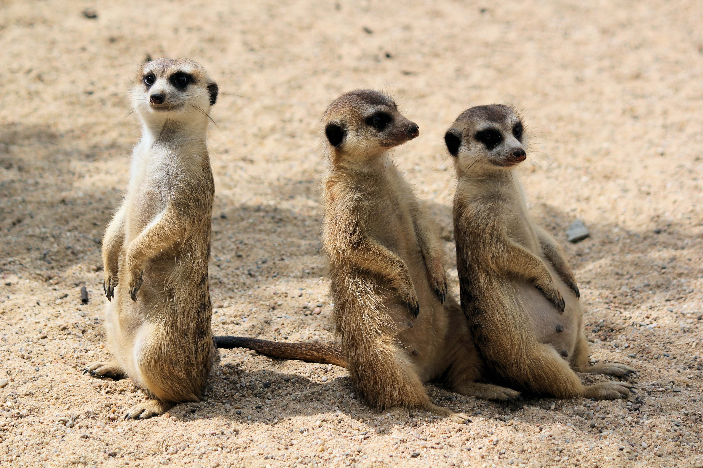
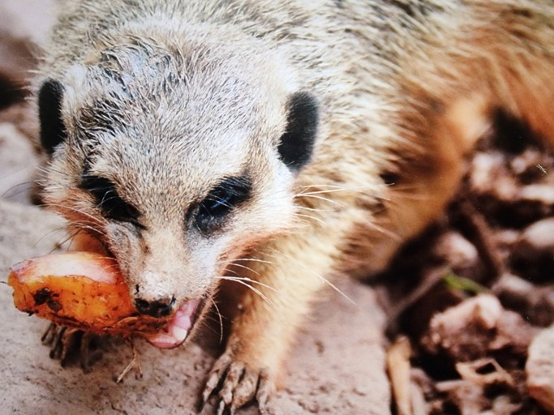

- 강아지
- 고양이
- 미어캣
미어캣
슈리케이트(suricate)라고도 한다. 보통 영어명인 미어캣, 미어 고양이로 불린다.
다 자란 미어캣의 몸길이는 20㎝ 정도 되는 꼬리를 포함해 50㎝ 정도이다. 몸과 꼬리가 가늘고 길며,
머리는 정면에서 보면 둥글고 코는 뾰족하다.
눈은 크지 않고 검은 테두리가 있으며 양 눈 사이가 좁다.

가까운 종인 몽구스의 발가락이 5개인 것과는 달리 앞·뒷발 발가락이 모두 4개다.
발바닥은 노출되어 있으며, 앞발에는 구부러진 강한 발톱이 있어 굴을 파기에 알맞고 뒷다리는 짤막하다.
털은 매끄럽고 길며 보통 은빛이 도는 갈색이고 등에 검은 줄무늬가 있다. 얼굴은 희지만, 귀와 눈자위, 꼬리 끝은 검은색을 띤다.
미어캣 식사
식물과 동물 모두를 먹는 잡식 동물이지만, 주로 먹는 것은 곤충이다.
발달된 후각을 이용해 땅 속에 숨어있는 벌레를 잡아먹으며, 작은 새나 과일, 도마뱀, 독이 있는 전갈까지 먹는다.

- 미어캣은 체지방을 축적하지 못해서 계속 사냥을 해서 먹이를 먹어야 한다고 한다.
- 집에서 키우는 미어캣에게는 주로 고양이 사료를 많이 급여하는 편이라고 한다.
- 닭 가슴살이나 과일, 야채, 밀웜의 간식이 있다.